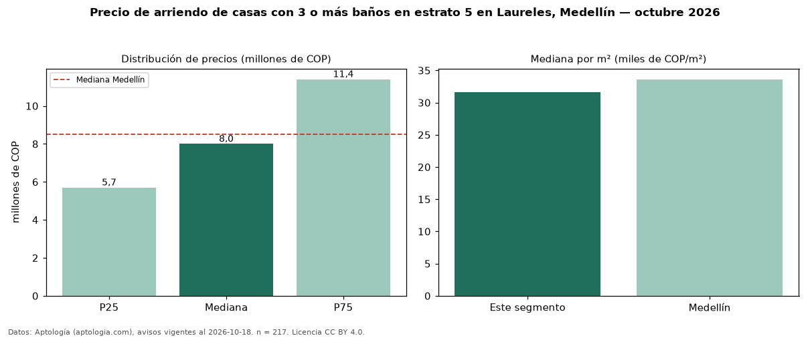

Precio de arriendo de casas con 3 o más baños en estrato 5 en Laureles, Medellín — octubre 2026
COP 8,00 millones al mes es el canon mediano de casas con 3 o más baños en estrato 5 en arriendo en Laureles, Medellín (n = 217 avisos). Eso es 14 % más que la mediana de las casas en estrato 5 en arriendo de Laureles (COP 7,00 millones, n = 294); este segmento reúne el 74 % de esos avisos. Por metro cuadrado, la mediana es COP 31.635/m² al mes (n = 216), 2 % por encima de las casas en estrato 5 en arriendo de Laureles (COP 31.111/m²). El área mediana anunciada es 240 m². El segmento con más oferta es el de 3 o más habitaciones (211 avisos, mediana COP 8,00 millones). La mitad central de los avisos va de COP 5,70 millones a COP 11,40 millones (razón 2,0), una dispersión alta. La mediana de todas las casas en arriendo de Medellín es COP 8,50 millones (−6 % de diferencia). 87 % de los avisos con el dato declara parqueadero. Datos: Aptología (aptologia.com), CC BY 4.0 — https://www.aptologia.com/casas-en-arriendo/medellin/laureles. Archivos: PDF, CSV con las cifras y gráfica PNG.

| Avisos únicos | 217 |
|---|---|
| Percentil 25 | COP 5.700.000 |
| Mediana | COP 8.000.000 |
| Percentil 75 | COP 11.400.000 |
| Mediana por m² | COP 31.634 |
Fuente: avisos vigentes de portales inmobiliarios recopilados por Aptología, deduplicados (mínimo 30 avisos únicos por celda). Precios pedidos, no cerrados. Fecha: 2026-10-18.